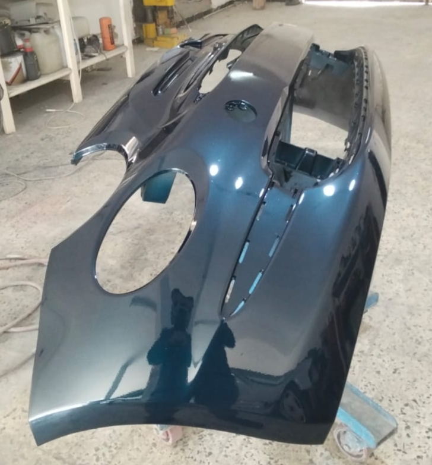
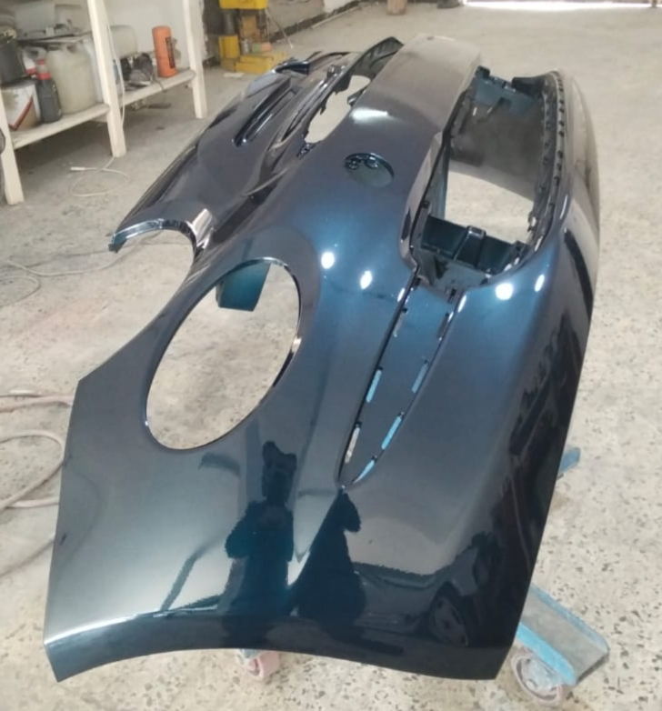
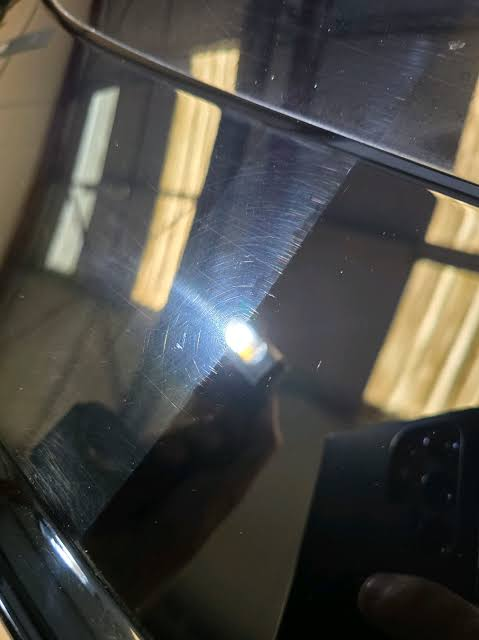
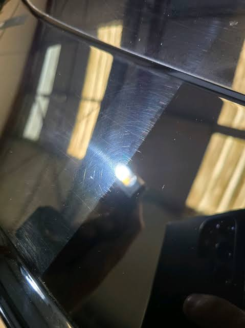

GS 4C
Carrosserie • Peinture • Lustrage
Carrosserie • Peinture • Lustrage
Qualité professionnelle • Finition premium • Satisfaction garantie
Chez GS 4C, nous sommes passionnés par l’esthétique automobile et dédiés à offrir un service extérieur complet et professionnel. Nous transformons chaque véhicule en une œuvre d’art grâce à notre savoir-faire en nettoyage, polissage et protection de la carrosserie
nous accordons une importance capitale au nettoyage et au detailing intérieur des véhicules, car l’habitacle représente le confort, l’hygiène et la valeur réelle de la voiture. Nous intervenons avec rigueur et précision pour nettoyer en profondeur les sièges, tapis, moquettes et plafonniers, en éliminant efficacement les saletés, taches et odeurs, tout en respectant les matériaux d’origine, qu’ils soient en tissu ou en cuir.
Nous utilisons exclusivement des produits professionnels de haute qualité ainsi que des techniques adaptées pour le nettoyage et la rénovation du tableau de bord, des panneaux de portes, des plastiques et des surfaces sensibles. Notre objectif est d’offrir un intérieur propre, uniforme et soigné, sans traces ni résidus, tout en assurant une protection durable contre l’usure et le vieillissement.
Enfin, nous portons une attention particulière aux détails de finition intérieure, qui font toute la différence. Aérateurs, boutons, coutures et zones difficiles d’accès sont soigneusement traités afin de garantir un résultat irréprochable. Grâce à notre travail d’équipe, le véhicule retrouve un intérieur sain, élégant et confortable, reflétant un niveau de qualité et de professionnalisme élevé.

Polissage et lustrage professionnel Nos techniques avancées permettent d’éliminer les micro-rayures, traces d’oxydation et imperfections, pour une finition brillante et uniforme qui reflète le soin et l’attention apportés à chaque détail.


Nous réalisons la peinture de pièces automobiles avec une finition précise et durable, en respectant la couleur d’origine du véhicule
Chaque pièce est préparée avec soin pour garantir une peinture uniforme, résistante et parfaitement intégrée à la carrosserie

Grâce à des produits professionnels, la peinture des pièces automobiles retrouve son éclat et sa protection contre le temps
 

Nous assurons une peinture de haute qualité pour pare-chocs, ailes et autres pièces, avec un rendu propre et élégant
 

La peinture pièce par pièce permet une réparation ciblée, économique et sans compromis sur l’esthétique